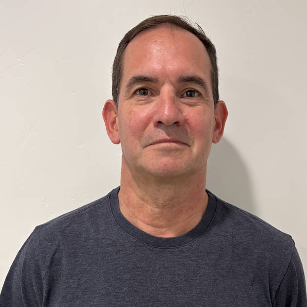
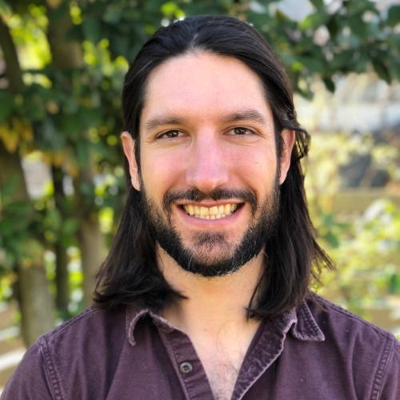
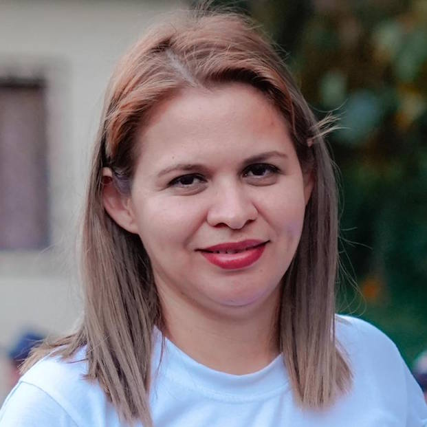
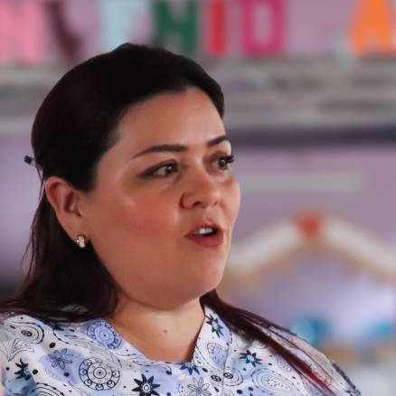
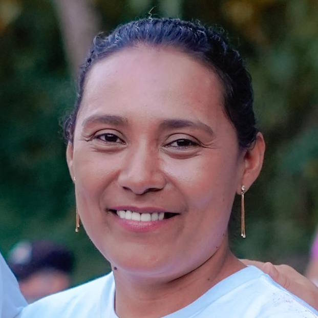
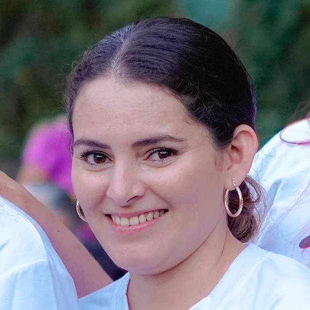

Apoyando el desarrollo comunitario liderado localmente en Arcatao y Nueva Trinidad, El Salvador desde 2020.
Con Corazón surgió de una larga relación de parroquia hermana entre la Iglesia Católica St. Joseph en Seattle y la Parroquia San Bartolomé en Arcatao. Reconociendo que las necesidades de la comunidad superaban lo que la relación parroquial podía abordar, los cofundadores Brian Bonet y Sam Kennedy establecieron Con Corazón en 2020 como una organización sin fines de lucro no denominacional dedicada a apoyar el desarrollo liderado localmente en Arcatao y Nueva Trinidad.
El primer proyecto de Con Corazón fue una respuesta inmediata a la pandemia de COVID-19. En 2020, más de 50 donantes contribuyeron con más de $20,000 para apoyar a casi 5,000 residentes de Arcatao y Nueva Trinidad, proporcionando mascarillas, medicamentos, alimentos y fondos de atención médica de emergencia a quienes más lo necesitaban, incluidos los adultos mayores y familias en comunidades de difícil acceso.
Hoy, Con Corazón apoya a Casa Hogar San Romero de América, un programa de atención a adultos mayores liderado localmente que sirve a personas mayores en Arcatao cuyas familias han sido desplazadas por la migración y el legado de los 12 años de guerra civil en El Salvador.
Arcatao se encuentra a 32 km al este de Chalatenango, en la frontera con Honduras, en un pequeño valle entre las montañas La Cañada y Caracol.
Con Corazón apoya el trabajo liderado localmente desde los Estados Unidos a través de recaudación de fondos, relaciones con donantes y movilización de recursos. No ejecutamos programas directamente. En cambio, financiamos y apoyamos al equipo local en Arcatao que lo hace.
Las donaciones son recibidas por Con Corazón y transferidas a FUDEMS, una organización sin fines de lucro certificada con sede en Arcatao, que gestiona y desembolsa esos fondos a Casa Hogar.
FUDEMS es una organización sin fines de lucro oficialmente registrada en Arcatao que proporciona infraestructura organizacional esencial, gestionando fondos, supervisando la actividad del programa y manejando la contabilidad y auditoría financiera. Como ONG local certificada en El Salvador, FUDEMS hace posible que los fondos fluyan de manera legal y transparente desde los Estados Unidos hacia El Salvador.
La Universidad de Saint Joseph en Filadelfia, socia formal de Con Corazón, financia equipo médico e insumos para los participantes de Casa Hogar, incluyendo sillas de ruedas, bastones, medicamentos y oxígeno a través de subvenciones. Las contribuciones de los donantes a Con Corazón financian al personal de Casa Hogar que brinda la atención.
Con Corazón — Estados Unidos


Con Corazón — El Salvador

Licenciatura en Administración de Empresas. Involucrada en proyectos comunitarios en Arcatao desde los primeros días de la relación de parroquia hermana.
"Casa Hogar es un espacio que llena nuestros corazones, reconociendo la importancia de nuestros adultos mayores y honrando la memoria histórica que construyó comunidades enteras."
— Silvia Menjívar

Técnica en enfermería. Líder comunitaria y presidenta de la asociación de mujeres en Arcatao.
"Mi aspiración es que Casa Hogar acoja a los adultos mayores que han sido abandonados o que luchan con su salud mental, un espacio permanente donde puedan llegar y sentirse libres y abrazados."
— Yessenia Monge

Licenciatura en Trabajo Social. Activa en la organización comunitaria con experiencia trabajando con adultos mayores.
"Visualizo una Casa Hogar llena de vida, amor y alegría, un espacio libre y sin límites para los adultos mayores, un lugar de encuentro intergeneracional donde siempre haya sonrisas y generosidad."
— María Santos Navarrete

Técnica en Administración de Empresas. Líder comunitaria.
"Es increíble entender que los hacemos felices. Mi aspiración es que Dios siga bendiciendo a cada donante para que podamos seguir creciendo en Casa Hogar."
— Guadalupe Bonilla